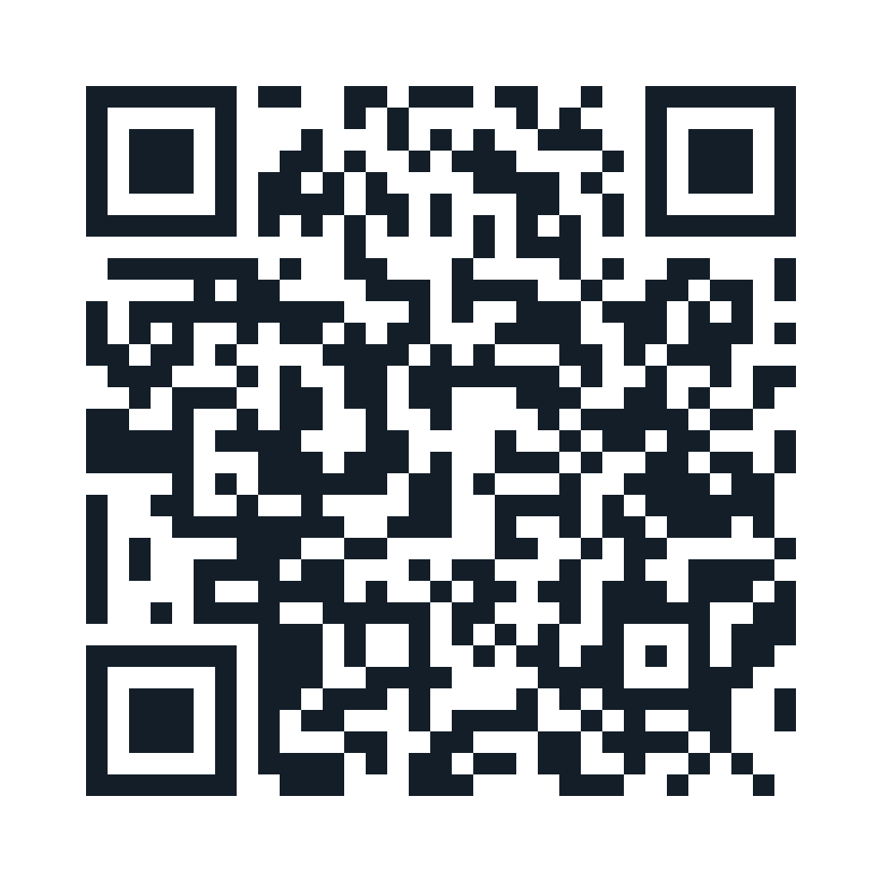

Contacto académico y profesional
Gabriel Salgado
Maldonado
Fonoaudiólogo · Magíster en Epidemiología
Académico Universidad de los Andes
Escuela de Enfermería y Escuela de Fonoaudiología
Presidente Sociedad Chilena de Deglución y Alimentación (SOCHIDA)
Correo institucional
gsalgadom@uandes.clEl archivo de contacto incluye el correo institucional, los datos profesionales y los enlaces a la web y a la charla. Al abrirlo, selecciona crear o añadir contacto en tu teléfono.
Compartir mi tarjeta

Escanea para ver los datos, guardar el contacto y acceder a los recursos.